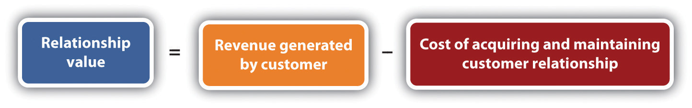

Broadly, customer relationship management (CRM) can be looked at from the following standpoints:
Effective CRM across all three channels can also create a powerful new marketing and referral force for a company: its happy customers. Delighting customers fosters positive word of mouth.
While CRM is a customer-centric approach to doing business, CRM needs to be approached strategically—in line with the business objectives of a company.
The first step to any CRM initiative is to understand the value of a customer relationship to a business. While this is unique to each customer, data mining can be used to determine the value of segments of customers.
Figure 17.1 The Value of a Customer Relationship to a Business
The revenue generated by a customer is literally the sales made to the customer. This can be calculated on a one-off basis directly related to the cost of acquiring that particular sale, or it can be calculated over the lifetime of the customer relationship. However, referrals made by a customer can also be included as part of the revenue generated by the customer.
The cost of acquiring the customer refers to the marketing and advertising channels used to acquire that customer. In eMarketing, this is the CPA (cost per acquisition) of any of the channels used to acquire a customer. The benefit of eMarketing is that it is highly measurable and trackable, enabling a relatively accurate calculation of CPA.
The lifetime value of a customer refers to calculating the costs of both acquiring and retaining a customer against all purchases made over the lifetime of the customer relationship. One can also look at customer value in terms of the referrals that a customer generates for a company.
For example, a potential customer looking to purchase a digital camera is likely to search on Google for cameras. As a company selling digital cameras, your excellent PPC (pay-per-click) advertisement and compelling offer attracts the potential customer who clicks through to your Web site. Impressed with your product offering, she purchases a camera from you and signs up to your e-mail newsletter as part of the payment process.
Analyzing the spending on your PPC campaign against the sales attributed to the campaign will give the cost per acquisition of each sale. In this case, this is the cost of acquiring the new customer.
As she has now signed up to your newsletter, each month you send her compelling information about products she might be interested in. If you have taken note of her obvious interest in photography, these newsletters could be focused on photography and highlight additional products she can use with her new camera. The costs associated with sending these e-mails are the costs of maintaining the relationship with the customer. When she purchases from you again, these costs can be measured against the repeat sales she is likely to make.
While most companies define customer loyalty based on the repeat purchases of happy customers, some business are built around one-off purchases. Wedding photography is one of those businesses. With so much time and effort invested in each customer relationship, how can this be returned into repeat business?
Bella Pictures (http://www.bellapictures.com) focuses on ensuring that its very satisfied brides refer its service to friends and family. In fact, 30 percent of new business comes from these referrals.
It also offers services to wedding guests, such as allowing them to make orders of wedding photos themselves, which increases its customers for each wedding.Nicole Lewis, “Marrying CRM to a New Definition of Loyalty,” InsideCRM, October 23, 2008, http://www.insidecrm.com/features/new-definition-loyalty-102308 (accessed June 24, 2010).
While CRM initiatives need to satisfy customer goals—increased customer satisfaction and approval—these need to be in line with business goals. Business goals are to increase overall revenue. In terms of CRM, this can be either to increase revenue generated by each customer, to increase the number of customers, to reduce the costs of acquiring a customer, or a combination of all three.
It is important to align CRM initiatives with business goals so that success of the initiatives can be measured. It is here that CRM goals can be set across marketing channels, sales channels, and service channels.
Zappos (http://www.zappos.com), a U.S. online shoe retailer, bases much of its success on its customer service. It offers free shipping on all its purchases, as well as free returns. In fact, goods are shipped with a preprinted return label, making the process straightforward for customers. Zappos also invests heavily in its customer service team, empowering each member of the team to do what he needs to do to delight customers.
For example, Zaz LaMarr blogged about her experience with Zappos. She had meant to return some shoes to Zappos, but her mother passed away, and naturally she just didn’t have time. Zappos arranged to have UPS come pick up the shoes and then sent her flowers.
Yahoo! shows nearly two thousand links to her blog post, which has generated comments like the following:
There is no doubt that Zappos’ customer service costs are high. Not only is shipping free, but its customer service team has been given the authority to make gestures like the one above. The return to Zappos in terms of goodwill is almost immeasurable (although its online reputation is excellent) but no doubt leads to increased referrals and sales and customer loyalty.Meg Marco, “Zappos Sends You Flowers,” The Consumerist, October 16, 2007, http://consumerist.com/consumer/above-and-beyond/zappos-sends-you-flowers-311369.php (accessed November 17, 2008).
When it comes to the marketing channel, CRM initiatives can be used both in the acquisition of new customers and in the marketing to existing customers (which can be seen as acquiring new sales from existing customers).
CRM can be looked at from several perspectives: